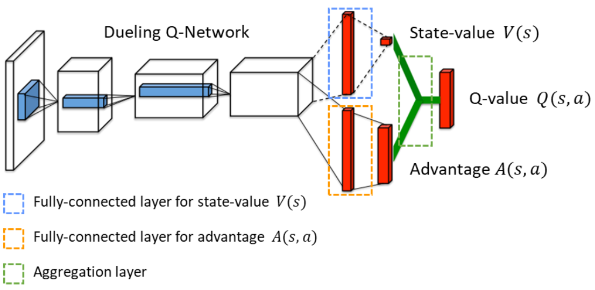

DQN 及其变种
原始 DQN
在状态空间较大或状态空间连续时无法通过 q 表来表示动作价值函数，可以采取深度神经网络来拟合出 q 函数 qw(s, a)，其中用于拟合 q 函数的神经网络被称为 Q 网络：

网络的输入为状态 s∈S，输出为动作价值向量 qw(s, a)∈R∣A∣。Q 网络的损失函数即 TD 误差的平方，例如基于 Q-Learning 的 DQN 的优化问题为：
wmin2n1i=1∑b[qw(si, ai)−(ri+γamaxqw(si′, a))]2
Dueling Net
通过状态价值函数 v(s) 和动作价值函数 q(s, a) 定义优势函数 d(s, a)=q(s, a)−v(s)，最优优势函数为：
d⋆(s, a)=q⋆(s, a)−v⋆(s)
最优优势函数满足：
amaxd⋆(s, a)=amaxq⋆(s, a)−v⋆(s)=0
因此有 q⋆(s, a)=v⋆(s)+d⋆(s, a)=v⋆(s)+d⋆(s, a)−maxad⋆(s, a)。Dueling Net 不直接对动作价值 q 进行建模，而是分别建模状态价值 v 和优势函数 d，再进行加和得到动作价值 q：
qw, α, β(s, a)=vw, α(s)+dw, β(s, a)

其中参数 w 为 V 网络和 D 网络的共享参数，通常表现为用于提取特征的前几层网络层。由于以上建模方式会导致 v⋆ 和 d⋆ 建模的不唯一性（v+C+d−C），因此利用最优优势函数的性质将加和改写为：
qw, α, β(s, a)=vw, α(s)+dw, β(s, a)−a′maxdw, β(s, a′)
在实际应用中还可以使用平均操作来代替最大化操作，实验证明这种方案的效果更好：
qw, α, β(s, a)=vw, α(s)+dw, β(s, a)−∣A∣1a′∑dw, β(s, a′)
对比标准的 DQN 来说，Dueling Net 能够更好地建模在某些状态下 q⋆(s, a) 受不同动作 a 影响较小的环境，同时学习的状态价值函数 v 会同时影响所有动作的 q 值，更新效率较高。
Noisy Net
为了提升模型的鲁棒性，并且提升模型的探索性能，可以在 DRL 模型中加入噪声，将原有的参数表示为：
w=μ+σ∘ξ
其中 μ 和 σ 是需要学习的参数，参数的随机噪声之间相互独立并且服从标准正态分布 ξi∼N(0, 1)。例如对 DQN 加入噪声可以得到 Noisy DQN 模型，其中 ξ 在每次交互和学习时都需要进行随机采样：
qw(s, a)⇒qμ, σ; ξ(s, a)=qw′=μ+σ∘ξ(s, a)
与环境进行交互获取经验时不需要再使用 ϵ-greedy 策略（本身带有随机性），可以直接采取行为策略：
at=π(st)∈aargmaxqμ, σ; ξ(st, a)
在训练时每次从经验回放缓冲区中随机抽样一个单步转移四元组 (s, a, r, s′)，利用 TD 误差计算梯度并更新参数 μ、σ。而在训练完成进行决策时不再需要噪声，此时可以直接将 ξ 取做 0，转化为标准的 DQN。